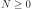
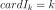
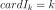
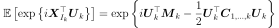
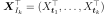

SpectralGaussianProcess¶
(Source code, png, hires.png, pdf)
{kind=link}
{kind=link}
-
class
SpectralGaussianProcess(*args)¶ Spectral Gaussian process.
- Available constructors:
SpectralGaussianProcess(spectralModel, timeGrid)
SpectralGaussianProcess(spectralModel, maxFreq, N)
Parameters: - timeGrid :
RegularGrid The time grid associated to the process. The algorithm is only implemented when the mesh is a regular grid.
- spectralModel :
SpectralModel - maxFreq : float
Equal to the maximal frequency minus .
- N : float
The number of points in the frequency grid, which is equal to the number of time stamps of the time grid.
Notes
- In the first usage, we fix the time grid and the second order model (spectral density model) which implements the process. The frequency discretization is deduced from the time discretization by the formulas
- In the second usage, the process is fixed in the frequency domain. fmax value and N induce the time grid. Care: the maximal frequency used in the computation is not fmax but .
- In the third usage, the spectral model is given and the other arguments are the same as the first usage.
- In the fourth usage, the spectral model is given and the other arguments are the same as the second usage.
The first call of
getRealization()might be time consuming because it computes hermitian matrices of size , where
hermitian matrices of size , where
 is the dimension of the spectral model. These matrices are factorized
and stored in order to be used for each call of the getRealization method.
is the dimension of the spectral model. These matrices are factorized
and stored in order to be used for each call of the getRealization method.Examples
Create a SpectralGaussianProcess from a spectral model and a time grid:
>>> import openturns as ot >>> amplitude = [1.0, 2.0] >>> scale = [4.0, 5.0] >>> spatialCorrelation = ot.CorrelationMatrix(2) >>> spatialCorrelation[0,1] = 0.8 >>> myTimeGrid = ot.RegularGrid(0.0, 0.1, 20) >>> mySpectralModel = ot.CauchyModel(scale, amplitude, spatialCorrelation) >>> mySpectNormProc1 = ot.SpectralGaussianProcess(mySpectralModel, myTimeGrid)
Attributes: thisownThe membership flag
Methods
getClassName()Accessor to the object’s name. getContinuousRealization()Get a continuous realization. getCovarianceModel()Accessor to the covariance model. getDescription()Get the description of the process. getFFTAlgorithm()Get the FFT algorithm used to generate realizations of the spectral Gaussian process. getFrequencyGrid()Get the frequency grid used to discretize the spectral model. getFrequencyStep()Get the frequency step used to discretize the spectral model. getFuture(*args)Prediction of the future iterations of the process.getId()Accessor to the object’s id. getInputDimension()Get the dimension of the domain  .
.getMarginal(*args)Get the  marginal of the random process.
marginal of the random process.getMaximalFrequency()Get the maximal frequency used in the computation. getMesh()Get the mesh. getNFrequency()Get the number of points in the frequency grid. getName()Accessor to the object’s name. getOutputDimension()Get the dimension of the domain .getRealization()Get a realization of the process. getSample(size)Get  realizations of the process.
realizations of the process.getShadowedId()Accessor to the object’s shadowed id. getSpectralModel()Get the spectral model. getTimeGrid()Get the time grid of observation of the process. getTrend()Accessor to the trend. getVisibility()Accessor to the object’s visibility state. hasName()Test if the object is named. hasVisibleName()Test if the object has a distinguishable name. isComposite()Test whether the process is composite or not. isNormal()Test whether the process is normal or not. isStationary()Test whether the process is stationary or not. setDescription(description)Set the description of the process. setFFTAlgorithm(fft)Set the FFT algorithm used to generate realizations of the spectral Gaussian process. setMesh(mesh)Set the mesh. setName(name)Accessor to the object’s name. setShadowedId(id)Accessor to the object’s shadowed id. setTimeGrid(timeGrid)Set the time grid of observation of the process. setVisibility(visible)Accessor to the object’s visibility state. AdaptGrid -
__init__(*args)¶ Initialize self. See help(type(self)) for accurate signature.
-
getClassName()¶ Accessor to the object’s name.
Returns: - class_name : str
The object class name (object.__class__.__name__).
-
getContinuousRealization()¶ Get a continuous realization.
Returns: - realization :
Function According to the process, the continuous realizations are built:
- either using a dedicated functional model if it exists: e.g. a functional basis process.
- or using an interpolation from a discrete realization of the process on
 : in dimension
: in dimension  , a linear interpolation and in
dimension
, a linear interpolation and in
dimension  , a piecewise constant function (the value at a
given position is equal to the value at the nearest vertex of the mesh of
the process).
, a piecewise constant function (the value at a
given position is equal to the value at the nearest vertex of the mesh of
the process).
- realization :
-
getCovarianceModel()¶ Accessor to the covariance model.
Returns: - cov_model :
CovarianceModel Covariance model, if any.
- cov_model :
-
getDescription()¶ Get the description of the process.
Returns: - description :
Description Description of the process.
- description :
-
getFFTAlgorithm()¶ Get the FFT algorithm used to generate realizations of the spectral Gaussian process.
Returns:
-
getFrequencyGrid()¶ Get the frequency grid used to discretize the spectral model.
Returns: - freqGrid :
RegularGrid The frequency grid used to discretize the spectral model.
- freqGrid :
-
getFrequencyStep()¶ Get the frequency step used to discretize the spectral model.
Returns: - freqStep : float
The frequency step used to discretize the spectral model.
-
getFuture(*args)¶ Prediction of the
future iterations of the process.Parameters: - stepNumber : int, 
Number of future steps.
- size : int,
 , optional
, optional Number of futures needed. Default is 1.
Returns: - prediction :
ProcessSampleorTimeSeries - future iterations of the process.
If
 , prediction is a
, prediction is a TimeSeries. Otherwise, it is aProcessSample.
-
getId()¶ Accessor to the object’s id.
Returns: - id : int
Internal unique identifier.
-
getInputDimension()¶ Get the dimension of the domain
.Returns: - n : int
Dimension of the domain
: .
-
getMarginal(*args)¶ Get the
marginal of the random process.Parameters: - k : int or list of ints

Index of the marginal(s) needed.
Returns: - marginals :
Process Process defined with marginal(s) of the random process.
- k : int or list of ints
-
getMaximalFrequency()¶ Get the maximal frequency used in the computation.
Returns: - freqMax : float
The maximal frequency used in the computation: .
-
getNFrequency()¶ Get the number of points in the frequency grid.
Returns: - freqGrid :
RegularGrid The number
of points in the frequency grid, which is equal to the
number of time stamps of the time grid.
- freqGrid :
-
getName()¶ Accessor to the object’s name.
Returns: - name : str
The name of the object.
-
getOutputDimension()¶ Get the dimension of the domain
.Returns: - d : int
Dimension of the domain
.
-
getRealization()¶ Get a realization of the process.
Returns: - realization :
Field Contains a mesh over which the process is discretized and the values of the process at the vertices of the mesh.
- realization :
-
getSample(size)¶ Get
realizations of the process.Parameters: - n : int,

Number of realizations of the process needed.
Returns: - processSample :
ProcessSample - realizations of the random process. A process sample is a
collection of fields which share the same mesh
 .
.
- n : int,
-
getShadowedId()¶ Accessor to the object’s shadowed id.
Returns: - id : int
Internal unique identifier.
-
getSpectralModel()¶ Get the spectral model.
Returns: - specMod :
SpectralModel The spectral model defining the process.
- specMod :
-
getTimeGrid()¶ Get the time grid of observation of the process.
Returns: - timeGrid :
RegularGrid Time grid of a process when the mesh associated to the process can be interpreted as a
RegularGrid. We check if the vertices of the mesh are scalar and are regularly spaced in but we don’t check if the connectivity of the mesh is conform
to the one of a regular grid (without any hole and composed of ordered
instants).
but we don’t check if the connectivity of the mesh is conform
to the one of a regular grid (without any hole and composed of ordered
instants).
- timeGrid :
-
getTrend()¶ Accessor to the trend.
Returns: - trend :
TrendTransform Trend, if any.
- trend :
-
getVisibility()¶ Accessor to the object’s visibility state.
Returns: - visible : bool
Visibility flag.
-
hasName()¶ Test if the object is named.
Returns: - hasName : bool
True if the name is not empty.
-
hasVisibleName()¶ Test if the object has a distinguishable name.
Returns: - hasVisibleName : bool
True if the name is not empty and not the default one.
-
isComposite()¶ Test whether the process is composite or not.
Returns: - isComposite : bool
True if the process is composite (built upon a function and a process).
-
isNormal()¶ Test whether the process is normal or not.
Returns: - isNormal : bool
True if the process is normal.
Notes
A stochastic process is normal if all its finite dimensional joint distributions are normal, which means that for all
 and
and
 , with , there is
, with , there is
 and
and
 such that:
such that:
where ,
 and
and
 and
and
 is the symmetric matrix:
is the symmetric matrix:
A Gaussian process is entirely defined by its mean function
 and its
covariance function
and its
covariance function  (or correlation function
(or correlation function  ).
).
-
isStationary()¶ Test whether the process is stationary or not.
Returns: - isStationary : bool
True if the process is stationary.
Notes
A process
 is stationary if its distribution is invariant by
translation:
is stationary if its distribution is invariant by
translation:  ,
,
 ,
,
 , we have:
, we have:
-
setDescription(description)¶ Set the description of the process.
Parameters: - description : sequence of str
Description of the process.
-
setFFTAlgorithm(fft)¶ Set the FFT algorithm used to generate realizations of the spectral Gaussian process.
Parameters:
-
setName(name)¶ Accessor to the object’s name.
Parameters: - name : str
The name of the object.
-
setShadowedId(id)¶ Accessor to the object’s shadowed id.
Parameters: - id : int
Internal unique identifier.
-
setTimeGrid(timeGrid)¶ Set the time grid of observation of the process.
Returns: - timeGrid :
RegularGrid Time grid of observation of the process when the mesh associated to the process can be interpreted as a
RegularGrid. We check if the vertices of the mesh are scalar and are regularly spaced in but we don’t check if the connectivity of the mesh is conform
to the one of a regular grid (without any hole and composed of ordered
instants).
- timeGrid :
-
setVisibility(visible)¶ Accessor to the object’s visibility state.
Parameters: - visible : bool
Visibility flag.
-
thisown¶ The membership flag